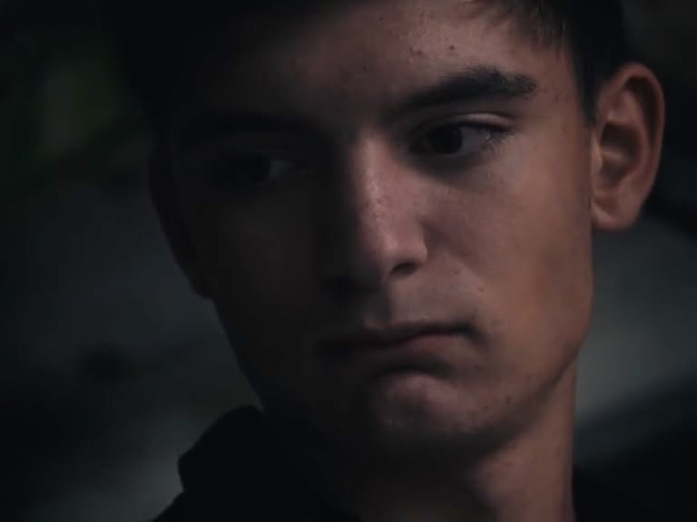

À propos de moi
Passionné par le cinéma depuis l'enfance, je développe mon expérience artistique à travers le théâtre, le jeu face caméra et la création de projets audiovisuels.
Je m'intéresse aussi à la cascade et au travail physique au service des personnages et de leurs histoires. Ce portfolio rassemble mon parcours et mes réalisations.
Personnalise ce texte avec ton expérience réelle avant de publier.

Mon parcours
Théâtre
Pratique du jeu scénique, interprétation et travail du personnage.
Cinéma
Création de courts-métrages et apprentissage du jeu face caméra.
Cascade
Intérêt pour le mouvement, la préparation physique et les cascades encadrées.
Mes projets
Projet de court-métrage n° 1
Ajoute ici le titre, ton rôle, l'année, un synopsis et un lien vers la bande-annonce ou le film.
VOIR SUR INSTAGRAM ↗Projet de court-métrage n° 2
Présente ici une autre réalisation ou une vidéo de démonstration de ton jeu.
Travaillons ensemble.
Pour les propositions de casting, collaborations et projets artistiques, retrouve-moi sur Instagram.
ME CONTACTER SUR INSTAGRAM ↗